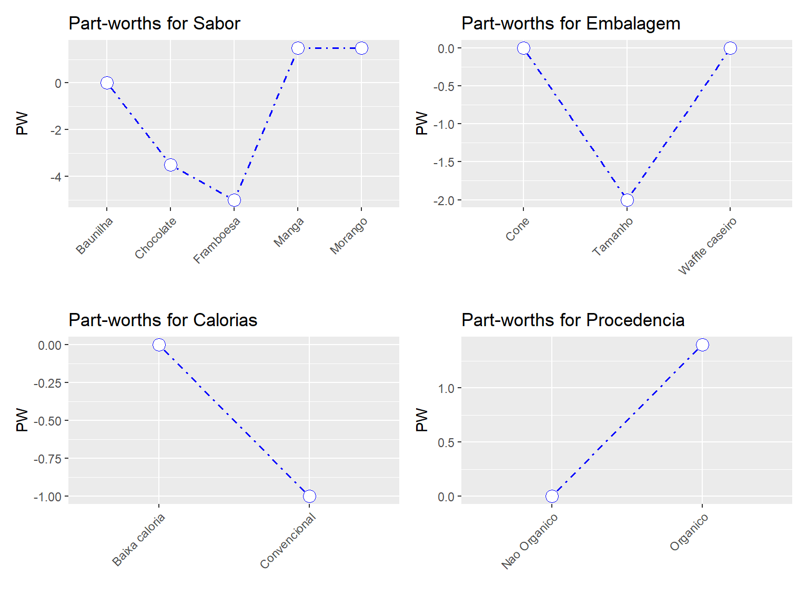
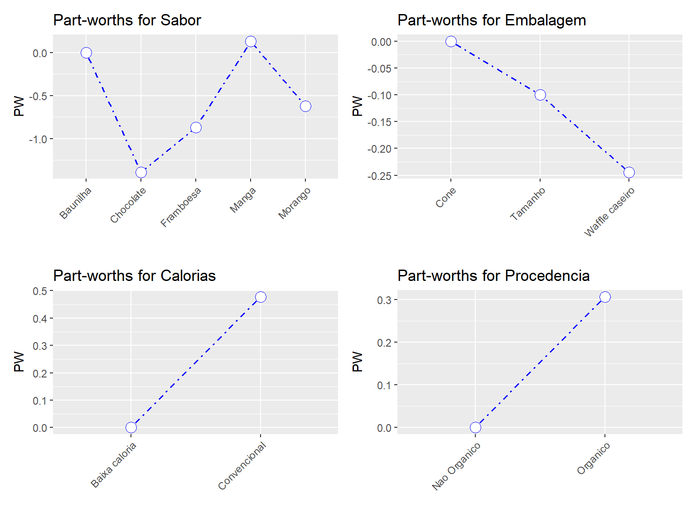

O objetivo deste tutorial é o de demonstrar como o conhecimento de ferramentas estatísticas com a linguagem livre pode ser extremamente útil, fácil e rápida para aquele comerciante, estrategista, analista e até mesmo pesquisador que almeje identificar com maior nível de assertividade os gostos, padrões e preferências de seus clientes.
Neste tutorial, você aprenderá como realizar uma análise conjunta. A análise conjunta começa a partir de uma pesquisa na qual as pessoas avaliam ou escolhem entre produtos (por exemplo, carros) que diferem em vários atributos (por exemplo, segurança, eficiência de combustível, conforto etc.). A partir dessas classificações ou escolhas, a análise determina o valor que as pessoas atribuem aos diferentes atributos do produto (por exemplo, quanto peso as pessoas atribuem à segurança ao escolher entre carros). Essas informações podem ser usadas no desenvolvimento de produtos.
Analisaremos os dados de uma pesquisa em que 15 consumidores foram convidados a avaliar dez sorvetes. Cada sorvete tinha um ‘perfil’ diferente, ou seja, uma combinação diferente de níveis de quatro atributos: Sabor (framboesa, chocolate, morango, manga, baunilha), Embalagem (waffle caseiro, casquinha, tamanho), Calorias (com pouca gordura ou não) e Procedência (orgânico ou não). Todos os 15 entrevistados classificaram os dez perfis, fornecendo uma pontuação entre 1 e 10.
Usamos os dados fornecidos pelo xlstat.com, descritos em seu tutorial sobre como fazer análises conjuntas no Excel.
Você deve baixar os dados em meu repositório do Github aqui (sorvetesxls.xlsx)
library(readxl)
url<-"https://github.com/rhozon/datasets/blob/master/sorvetesxls.xlsx?raw=true"
sorvetesxls <- tempfile()
download.file(url, sorvetesxls, mode="wb")
sorvetesxls<-read_excel(path = sorvetesxls, sheet = 1)
#voce tambem poderia utilizar:
#sorvetesxls <- read_excel("C:/Users/rodri/Downloads/sorvetesxls.xlsx")
str(sorvetesxls)## tibble [10 x 20] (S3: tbl_df/tbl/data.frame)
## $ Observacoes : chr [1:10] "Perfil 1" "Perfil 2" "Perfil 3" "Perfil 4" ...
## $ Sabor : chr [1:10] "Framboesa" "Chocolate" "Framboesa" "Morango" ...
## $ Embalagem : chr [1:10] "Waffle caseiro" "Cone" "Tamanho" "Tamanho" ...
## $ Calorias : chr [1:10] "Convencional" "Convencional" "Baixa caloria" "Convencional" ...
## $ Procedencia : chr [1:10] "Nao Organico" "Organico" "Organico" "Organico" ...
## $ Individuo 1 : num [1:10] 1 4 2 7 9 3 5 10 6 8
## $ Individuo 2 : num [1:10] 6 7 1 5 8 2 9 10 4 3
## $ Individuo 3 : num [1:10] 5 4 6 3 2 8 7 9 10 1
## $ Individuo 4 : num [1:10] 1 2 5 4 3 10 9 7 6 8
## $ Individuo 5 : num [1:10] 2 6 1 7 5 4 3 10 9 8
## $ Individuo 6 : num [1:10] 7 4 8 1 2 3 5 9 6 10
## $ Individuo 7 : num [1:10] 7 4 8 10 9 3 5 2 6 1
## $ Individuo 8 : num [1:10] 5 6 2 8 3 1 9 7 10 4
## $ Individuo 9 : num [1:10] 1 6 2 5 8 9 10 4 3 7
## $ Individuo 10: num [1:10] 10 8 9 6 2 3 1 4 5 7
## $ Individuo 11: num [1:10] 1 2 6 5 7 10 8 4 3 9
## $ Individuo 12: num [1:10] 10 8 9 6 3 1 4 2 5 7
## $ Individuo 13: num [1:10] 7 9 4 5 1 3 2 8 6 10
## $ Individuo 14: num [1:10] 10 1 9 6 5 4 7 3 8 2
## $ Individuo 15: num [1:10] 5 7 3 10 9 4 2 1 6 8Este dataset está organizado de forma que as avaliações que cada respondente fez foi inserida nas colunas. Vamos corrigir isso:
library(dplyr)
library(tidyr)
sorvetesxls <- sorvetesxls %>%
gather(Respondente, Nota, starts_with("Individuo")) %>%
# o entrevistado acompanha o respondente,
# a classificacao armazena as classificacoes do
# entrevistado e queremos empilhar todas as variaveis
# que comecam com s string "Individuo"
rename("Perfil" = "Observacoes") %>% # renomeia Observacoes para Perfil
mutate(Perfil = factor(Perfil),
Respondente = factor(Respondente), # fatorar identificadores
Sabor = factor(Sabor),
Embalagem = factor(Embalagem),
Calorias = factor(Calorias),
Procedencia = factor(Procedencia)) # fatorar os atributos do sorvete
sorvetesxls## # A tibble: 150 x 7
## Perfil Sabor Embalagem Calorias Procedencia Respondente Nota
## <fct> <fct> <fct> <fct> <fct> <fct> <dbl>
## 1 Perfil 1 Framboesa Waffle caseiro Convencional Nao Organico Individuo 1 1
## 2 Perfil 2 Chocolate Cone Convencional Organico Individuo 1 4
## 3 Perfil 3 Framboesa Tamanho Baixa caloria Organico Individuo 1 2
## 4 Perfil 4 Morango Tamanho Convencional Organico Individuo 1 7
## 5 Perfil 5 Morango Cone Baixa caloria Nao Organico Individuo 1 9
## 6 Perfil 6 Chocolate Waffle caseiro Convencional Nao Organico Individuo 1 3
## 7 Perfil 7 Baunilha Tamanho Baixa caloria Nao Organico Individuo 1 5
## 8 Perfil 8 Manga Waffle caseiro Baixa caloria Organico Individuo 1 10
## 9 Perfil 9 Manga Tamanho Convencional Nao Organico Individuo 1 6
## 10 Perfil 10 Baunilha Waffle caseiro Convencional Organico Individuo 1 8
## # ... with 140 more rowsComo vimos acima, temos as seguintes variáveis em nosso dataset:
Perfil: um identificador para os diferentes tipos de sorvetes
Sabor, Embalagem, Calorias e Procedencia são os atributos que descrevem o perfil dos sorvetes;
Respondente é diferenciada por indivíduo 1 e nota refere-se a qualificação de nível de qualidade que cada respondente atribui ao sorvete (de 1 a 10)
Quando inspecionamos nosso conjunto de dados, vemos que o sabor possui 5 níveis (framboesa, chocolate, morango, manga, baunilha), embalagem possui 3 níveis (waffle caseiro, cone, caneca), a Calorias possui 2 níveis (baixo teor de gordura versus não), e Procedência tem 2 níveis (orgânico vs. não). O objetivo de uma análise conjunta é estimar até que ponto cada nível de atributo afeta a classificação do sorvete.
Para fazer isso, o fabricante de sorvete poderia criar 5×3×2x2 = 60 sorvetes diferentes e peça às pessoas para avaliarem tudo isso. Isso fornecerá ao fabricante uma boa estimativa da importância de cada atributo e de todas as possíveis interações. No entanto, classificar 60 sorvetes é difícil para os participantes e um estudo tão grande seria caro para o fabricante financiar. Na prática, os pesquisadores nessa situação solicitarão que as pessoas classifiquem um subconjunto desses 60 sorvetes. Nesta seção, discutiremos como selecionar um subconjunto (por exemplo, 10 sorvetes) de todas as combinações possíveis de nível de atributo (ou seja, 60 sorvetes) que ainda nos permitirão obter boas estimativas dos efeitos mais importantes.
No conjunto de dados, já temos as classificações para dez perfis, portanto a decisão de quais sorvetes para teste já foi tomada. No entanto, vamos desconsiderar o fato de já termos os dados e considerar as decisões que precisam ser tomadas antes da coleta de dados. Em outras palavras, vamos discutir como passamos de um fatorial completo (todas as 60 combinações) para um design fracionário (menos de 60 combinações).
A função doe (projeto de experimentos) do pacote radiant nos ajudará a decidir sobre os projetos de estudo. Radiant é um pacote do R para business analytics.
A discussão a seguir da função doe é baseada na discussão da Radiant sobre essa função.
#install.packages("radiant")
library(radiant)Para usar a doe, precisamos inserir as informações sobre nossos atributos e seus níveis de uma maneira específica:
# atributo1, atributo2, etc. sao vetores com um elemento no qual fornecemos
#primeiro o nome do atributo seguido por um ponto e virgula e depois fornecemos
#todos os niveis dos atributos separados por ponto e virgula
atributo1 <- "Sabor; Framboesa; Chocolate; Morango; Manga; Baunilha"
atributo2 <- "Embalagem; Waffle caseiro; Cone; Tamanho"
atributo3 <- "Calorias; Convencional; Baixa caloria"
atributo4 <- "Procedencia; Organico; Nao organico"
# agora combine esses diferentes atributos em um vetor com c()
atributos <- c(atributo1, atributo2, atributo3, atributo4)Agora podemos pedir possíveis projetos experimentais:
summary(doe(atributos, seed = 123)) # Seed: fixa o gerador de numeros aleatorios## Experimental design
## # trials for partial factorial: 60
## # trials for full factorial : 60
## Random seed : 123
##
## Attributes and levels:
## Sabor: Framboesa, Chocolate, Morango, Manga, Baunilha
## Embalagem: Waffle_caseiro, Cone, Tamanho
## Calorias: Convencional, Baixa_caloria
## Procedencia: Organico, Nao_organico
##
## Design efficiency:
## Trials D-efficiency Balanced
## 9 0.105 FALSE
## 10 0.389 FALSE
## 11 0.411 FALSE
## 12 0.614 FALSE
## 13 0.542 FALSE
## 14 0.479 FALSE
## 15 0.762 FALSE
## 16 0.738 FALSE
## 17 0.748 FALSE
## 18 0.756 FALSE
## 19 0.644 FALSE
## 20 0.895 FALSE
## 21 0.848 FALSE
## 22 0.833 FALSE
## 23 0.790 FALSE
## 24 0.827 FALSE
## 25 0.787 FALSE
## 26 0.768 FALSE
## 27 0.759 FALSE
## 28 0.736 FALSE
## 29 0.702 FALSE
## 30 0.984 TRUE
## 31 0.952 FALSE
## 32 0.933 FALSE
## 33 0.928 FALSE
## 34 0.900 FALSE
## 35 0.871 FALSE
## 36 0.893 FALSE
## 37 0.866 FALSE
## 38 0.843 FALSE
## 39 0.836 FALSE
## 40 0.922 FALSE
## 41 0.899 FALSE
## 42 0.904 FALSE
## 43 0.882 FALSE
## 44 0.861 FALSE
## 45 0.949 FALSE
## 46 0.919 FALSE
## 47 0.912 FALSE
## 48 0.911 FALSE
## 49 0.891 FALSE
## 50 0.959 FALSE
## 51 0.939 FALSE
## 52 0.944 FALSE
## 53 0.925 FALSE
## 54 0.924 FALSE
## 55 0.906 FALSE
## 56 0.902 FALSE
## 57 0.884 FALSE
## 58 0.872 FALSE
## 59 0.855 FALSE
## 60 1.000 TRUE
##
## Partial factorial design correlations:
## ** Note: Variables are assumed to be ordinal **
## Sabor Embalagem Calorias Procedencia
## Sabor 1 0 0 0
## Embalagem 0 1 0 0
## Calorias 0 0 1 0
## Procedencia 0 0 0 1
##
## Partial factorial design:
## trial Sabor Embalagem Calorias Procedencia
## 1 Framboesa Waffle_caseiro Convencional Organico
## 2 Framboesa Waffle_caseiro Convencional Nao_organico
## 3 Framboesa Waffle_caseiro Baixa_caloria Organico
## 4 Framboesa Waffle_caseiro Baixa_caloria Nao_organico
## 5 Framboesa Cone Convencional Organico
## 6 Framboesa Cone Convencional Nao_organico
## 7 Framboesa Cone Baixa_caloria Organico
## 8 Framboesa Cone Baixa_caloria Nao_organico
## 9 Framboesa Tamanho Convencional Organico
## 10 Framboesa Tamanho Convencional Nao_organico
## 11 Framboesa Tamanho Baixa_caloria Organico
## 12 Framboesa Tamanho Baixa_caloria Nao_organico
## 13 Chocolate Waffle_caseiro Convencional Organico
## 14 Chocolate Waffle_caseiro Convencional Nao_organico
## 15 Chocolate Waffle_caseiro Baixa_caloria Organico
## 16 Chocolate Waffle_caseiro Baixa_caloria Nao_organico
## 17 Chocolate Cone Convencional Organico
## 18 Chocolate Cone Convencional Nao_organico
## 19 Chocolate Cone Baixa_caloria Organico
## 20 Chocolate Cone Baixa_caloria Nao_organico
## 21 Chocolate Tamanho Convencional Organico
## 22 Chocolate Tamanho Convencional Nao_organico
## 23 Chocolate Tamanho Baixa_caloria Organico
## 24 Chocolate Tamanho Baixa_caloria Nao_organico
## 25 Morango Waffle_caseiro Convencional Organico
## 26 Morango Waffle_caseiro Convencional Nao_organico
## 27 Morango Waffle_caseiro Baixa_caloria Organico
## 28 Morango Waffle_caseiro Baixa_caloria Nao_organico
## 29 Morango Cone Convencional Organico
## 30 Morango Cone Convencional Nao_organico
## 31 Morango Cone Baixa_caloria Organico
## 32 Morango Cone Baixa_caloria Nao_organico
## 33 Morango Tamanho Convencional Organico
## 34 Morango Tamanho Convencional Nao_organico
## 35 Morango Tamanho Baixa_caloria Organico
## 36 Morango Tamanho Baixa_caloria Nao_organico
## 37 Manga Waffle_caseiro Convencional Organico
## 38 Manga Waffle_caseiro Convencional Nao_organico
## 39 Manga Waffle_caseiro Baixa_caloria Organico
## 40 Manga Waffle_caseiro Baixa_caloria Nao_organico
## 41 Manga Cone Convencional Organico
## 42 Manga Cone Convencional Nao_organico
## 43 Manga Cone Baixa_caloria Organico
## 44 Manga Cone Baixa_caloria Nao_organico
## 45 Manga Tamanho Convencional Organico
## 46 Manga Tamanho Convencional Nao_organico
## 47 Manga Tamanho Baixa_caloria Organico
## 48 Manga Tamanho Baixa_caloria Nao_organico
## 49 Baunilha Waffle_caseiro Convencional Organico
## 50 Baunilha Waffle_caseiro Convencional Nao_organico
## 51 Baunilha Waffle_caseiro Baixa_caloria Organico
## 52 Baunilha Waffle_caseiro Baixa_caloria Nao_organico
## 53 Baunilha Cone Convencional Organico
## 54 Baunilha Cone Convencional Nao_organico
## 55 Baunilha Cone Baixa_caloria Organico
## 56 Baunilha Cone Baixa_caloria Nao_organico
## 57 Baunilha Tamanho Convencional Organico
## 58 Baunilha Tamanho Convencional Nao_organico
## 59 Baunilha Tamanho Baixa_caloria Organico
## 60 Baunilha Tamanho Baixa_caloria Nao_organico
##
## Estimable effects from partial factorial design:
##
## Sabor|Chocolate
## Sabor|Morango
## Sabor|Manga
## Sabor|Baunilha
## Embalagem|Cone
## Embalagem|Tamanho
## Calorias|Baixa_caloria
## Procedencia|Nao_organico
## Sabor|Chocolate:Embalagem|Cone
## Sabor|Morango:Embalagem|Cone
## Sabor|Manga:Embalagem|Cone
## Sabor|Baunilha:Embalagem|Cone
## Sabor|Chocolate:Embalagem|Tamanho
## Sabor|Morango:Embalagem|Tamanho
## Sabor|Manga:Embalagem|Tamanho
## Sabor|Baunilha:Embalagem|Tamanho
## Sabor|Chocolate:Calorias|Baixa_caloria
## Sabor|Morango:Calorias|Baixa_caloria
## Sabor|Manga:Calorias|Baixa_caloria
## Sabor|Baunilha:Calorias|Baixa_caloria
## Embalagem|Cone:Calorias|Baixa_caloria
## Embalagem|Tamanho:Calorias|Baixa_caloria
## Sabor|Chocolate:Procedencia|Nao_organico
## Sabor|Morango:Procedencia|Nao_organico
## Sabor|Manga:Procedencia|Nao_organico
## Sabor|Baunilha:Procedencia|Nao_organico
## Embalagem|Cone:Procedencia|Nao_organico
## Embalagem|Tamanho:Procedencia|Nao_organico
## Calorias|Baixa_caloria:Procedencia|Nao_organico
## Sabor|Chocolate:Embalagem|Cone:Calorias|Baixa_caloria
## Sabor|Morango:Embalagem|Cone:Calorias|Baixa_caloria
## Sabor|Manga:Embalagem|Cone:Calorias|Baixa_caloria
## Sabor|Baunilha:Embalagem|Cone:Calorias|Baixa_caloria
## Sabor|Chocolate:Embalagem|Tamanho:Calorias|Baixa_caloria
## Sabor|Morango:Embalagem|Tamanho:Calorias|Baixa_caloria
## Sabor|Manga:Embalagem|Tamanho:Calorias|Baixa_caloria
## Sabor|Baunilha:Embalagem|Tamanho:Calorias|Baixa_caloria
## Sabor|Chocolate:Embalagem|Cone:Procedencia|Nao_organico
## Sabor|Morango:Embalagem|Cone:Procedencia|Nao_organico
## Sabor|Manga:Embalagem|Cone:Procedencia|Nao_organico
## Sabor|Baunilha:Embalagem|Cone:Procedencia|Nao_organico
## Sabor|Chocolate:Embalagem|Tamanho:Procedencia|Nao_organico
## Sabor|Morango:Embalagem|Tamanho:Procedencia|Nao_organico
## Sabor|Manga:Embalagem|Tamanho:Procedencia|Nao_organico
## Sabor|Baunilha:Embalagem|Tamanho:Procedencia|Nao_organico
## Sabor|Chocolate:Calorias|Baixa_caloria:Procedencia|Nao_organico
## Sabor|Morango:Calorias|Baixa_caloria:Procedencia|Nao_organico
## Sabor|Manga:Calorias|Baixa_caloria:Procedencia|Nao_organico
## Sabor|Baunilha:Calorias|Baixa_caloria:Procedencia|Nao_organico
## Embalagem|Cone:Calorias|Baixa_caloria:Procedencia|Nao_organico
## Embalagem|Tamanho:Calorias|Baixa_caloria:Procedencia|Nao_organico
## Sabor|Chocolate:Embalagem|Cone:Calorias|Baixa_caloria:Procedencia|Nao_organico
## Sabor|Morango:Embalagem|Cone:Calorias|Baixa_caloria:Procedencia|Nao_organico
## Sabor|Manga:Embalagem|Cone:Calorias|Baixa_caloria:Procedencia|Nao_organico
## Sabor|Baunilha:Embalagem|Cone:Calorias|Baixa_caloria:Procedencia|Nao_organico
## Sabor|Chocolate:Embalagem|Tamanho:Calorias|Baixa_caloria:Procedencia|Nao_organico
## Sabor|Morango:Embalagem|Tamanho:Calorias|Baixa_caloria:Procedencia|Nao_organico
## Sabor|Manga:Embalagem|Tamanho:Calorias|Baixa_caloria:Procedencia|Nao_organico
## Sabor|Baunilha:Embalagem|Tamanho:Calorias|Baixa_caloria:Procedencia|Nao_organico
##
## Full factorial design:
## trial Sabor Embalagem Calorias Procedencia
## 1 Framboesa Waffle_caseiro Convencional Organico
## 2 Framboesa Waffle_caseiro Convencional Nao_organico
## 3 Framboesa Waffle_caseiro Baixa_caloria Organico
## 4 Framboesa Waffle_caseiro Baixa_caloria Nao_organico
## 5 Framboesa Cone Convencional Organico
## 6 Framboesa Cone Convencional Nao_organico
## 7 Framboesa Cone Baixa_caloria Organico
## 8 Framboesa Cone Baixa_caloria Nao_organico
## 9 Framboesa Tamanho Convencional Organico
## 10 Framboesa Tamanho Convencional Nao_organico
## 11 Framboesa Tamanho Baixa_caloria Organico
## 12 Framboesa Tamanho Baixa_caloria Nao_organico
## 13 Chocolate Waffle_caseiro Convencional Organico
## 14 Chocolate Waffle_caseiro Convencional Nao_organico
## 15 Chocolate Waffle_caseiro Baixa_caloria Organico
## 16 Chocolate Waffle_caseiro Baixa_caloria Nao_organico
## 17 Chocolate Cone Convencional Organico
## 18 Chocolate Cone Convencional Nao_organico
## 19 Chocolate Cone Baixa_caloria Organico
## 20 Chocolate Cone Baixa_caloria Nao_organico
## 21 Chocolate Tamanho Convencional Organico
## 22 Chocolate Tamanho Convencional Nao_organico
## 23 Chocolate Tamanho Baixa_caloria Organico
## 24 Chocolate Tamanho Baixa_caloria Nao_organico
## 25 Morango Waffle_caseiro Convencional Organico
## 26 Morango Waffle_caseiro Convencional Nao_organico
## 27 Morango Waffle_caseiro Baixa_caloria Organico
## 28 Morango Waffle_caseiro Baixa_caloria Nao_organico
## 29 Morango Cone Convencional Organico
## 30 Morango Cone Convencional Nao_organico
## 31 Morango Cone Baixa_caloria Organico
## 32 Morango Cone Baixa_caloria Nao_organico
## 33 Morango Tamanho Convencional Organico
## 34 Morango Tamanho Convencional Nao_organico
## 35 Morango Tamanho Baixa_caloria Organico
## 36 Morango Tamanho Baixa_caloria Nao_organico
## 37 Manga Waffle_caseiro Convencional Organico
## 38 Manga Waffle_caseiro Convencional Nao_organico
## 39 Manga Waffle_caseiro Baixa_caloria Organico
## 40 Manga Waffle_caseiro Baixa_caloria Nao_organico
## 41 Manga Cone Convencional Organico
## 42 Manga Cone Convencional Nao_organico
## 43 Manga Cone Baixa_caloria Organico
## 44 Manga Cone Baixa_caloria Nao_organico
## 45 Manga Tamanho Convencional Organico
## 46 Manga Tamanho Convencional Nao_organico
## 47 Manga Tamanho Baixa_caloria Organico
## 48 Manga Tamanho Baixa_caloria Nao_organico
## 49 Baunilha Waffle_caseiro Convencional Organico
## 50 Baunilha Waffle_caseiro Convencional Nao_organico
## 51 Baunilha Waffle_caseiro Baixa_caloria Organico
## 52 Baunilha Waffle_caseiro Baixa_caloria Nao_organico
## 53 Baunilha Cone Convencional Organico
## 54 Baunilha Cone Convencional Nao_organico
## 55 Baunilha Cone Baixa_caloria Organico
## 56 Baunilha Cone Baixa_caloria Nao_organico
## 57 Baunilha Tamanho Convencional Organico
## 58 Baunilha Tamanho Convencional Nao_organico
## 59 Baunilha Tamanho Baixa_caloria Organico
## 60 Baunilha Tamanho Baixa_caloria Nao_organicoObserve a saída no cabeçalho Design efficiency.
As linhas representam projetos experimentais com diferentes números de Trials ou diferentes números de sorvetes (ou seja, combinações de nível de atributo) que seriam testados. Uma palavra melhor para julgamento é perfil. Para cada projeto experimental, ele mostra a D-efficiency do projeto - uma medida de como poderemos estimar com clareza os efeitos do interesse após a execução do experimento (pontuações mais altas são melhores) - e se o projeto está ou não balanceado - se cada nível está incluído no mesmo número de tentativas ou perfis.
Idealmente, procuramos projetos balanceados com alta D-efficiency (acima de 0,80 é considerado razoável). Temos dois candidatos, um delineamento experimental com 60 perfis, que é apenas o delineamento fatorial completo ou um delineamento com 30 perfis. Vamos dar uma olhada no design com 30 perfis:
summary(doe(atributos, seed = 123, trials = 30))## Experimental design
## # trials for partial factorial: 30
## # trials for full factorial : 60
## Random seed : 123
##
## Attributes and levels:
## Sabor: Framboesa, Chocolate, Morango, Manga, Baunilha
## Embalagem: Waffle_caseiro, Cone, Tamanho
## Calorias: Convencional, Baixa_caloria
## Procedencia: Organico, Nao_organico
##
## Design efficiency:
## Trials D-efficiency Balanced
## 30 0.984 TRUE
##
## Partial factorial design correlations:
## ** Note: Variables are assumed to be ordinal **
## Sabor Embalagem Calorias Procedencia
## Sabor 1 0 0.000 0.000
## Embalagem 0 1 0.000 0.000
## Calorias 0 0 1.000 -0.105
## Procedencia 0 0 -0.105 1.000
##
## Partial factorial design:
## trial Sabor Embalagem Calorias Procedencia
## 1 Framboesa Waffle_caseiro Convencional Organico
## 4 Framboesa Waffle_caseiro Baixa_caloria Nao_organico
## 6 Framboesa Cone Convencional Nao_organico
## 7 Framboesa Cone Baixa_caloria Organico
## 10 Framboesa Tamanho Convencional Nao_organico
## 11 Framboesa Tamanho Baixa_caloria Organico
## 13 Chocolate Waffle_caseiro Convencional Organico
## 14 Chocolate Waffle_caseiro Convencional Nao_organico
## 19 Chocolate Cone Baixa_caloria Organico
## 20 Chocolate Cone Baixa_caloria Nao_organico
## 22 Chocolate Tamanho Convencional Nao_organico
## 23 Chocolate Tamanho Baixa_caloria Organico
## 26 Morango Waffle_caseiro Convencional Nao_organico
## 28 Morango Waffle_caseiro Baixa_caloria Nao_organico
## 29 Morango Cone Convencional Organico
## 32 Morango Cone Baixa_caloria Nao_organico
## 33 Morango Tamanho Convencional Organico
## 35 Morango Tamanho Baixa_caloria Organico
## 39 Manga Waffle_caseiro Baixa_caloria Organico
## 40 Manga Waffle_caseiro Baixa_caloria Nao_organico
## 41 Manga Cone Convencional Organico
## 42 Manga Cone Convencional Nao_organico
## 46 Manga Tamanho Convencional Nao_organico
## 47 Manga Tamanho Baixa_caloria Organico
## 49 Baunilha Waffle_caseiro Convencional Organico
## 51 Baunilha Waffle_caseiro Baixa_caloria Organico
## 53 Baunilha Cone Convencional Organico
## 56 Baunilha Cone Baixa_caloria Nao_organico
## 58 Baunilha Tamanho Convencional Nao_organico
## 60 Baunilha Tamanho Baixa_caloria Nao_organico
##
## Estimable effects from partial factorial design:
##
## Sabor|Chocolate
## Sabor|Morango
## Sabor|Manga
## Sabor|Baunilha
## Embalagem|Cone
## Embalagem|Tamanho
## Calorias|Baixa_caloria
## Procedencia|Nao_organico
## Sabor|Chocolate:Embalagem|Cone
## Sabor|Morango:Embalagem|Cone
## Sabor|Manga:Embalagem|Cone
## Sabor|Baunilha:Embalagem|Cone
## Sabor|Chocolate:Embalagem|Tamanho
## Sabor|Morango:Embalagem|Tamanho
## Sabor|Manga:Embalagem|Tamanho
## Sabor|Baunilha:Embalagem|Tamanho
## Sabor|Chocolate:Calorias|Baixa_caloria
## Sabor|Morango:Calorias|Baixa_caloria
## Sabor|Manga:Calorias|Baixa_caloria
## Sabor|Baunilha:Calorias|Baixa_caloria
## Embalagem|Cone:Calorias|Baixa_caloria
## Embalagem|Tamanho:Calorias|Baixa_caloria
## Sabor|Chocolate:Procedencia|Nao_organico
## Sabor|Morango:Procedencia|Nao_organico
## Sabor|Manga:Procedencia|Nao_organico
## Sabor|Baunilha:Procedencia|Nao_organico
## Embalagem|Cone:Procedencia|Nao_organico
## Calorias|Baixa_caloria:Procedencia|Nao_organico
## Sabor|Morango:Embalagem|Tamanho:Calorias|Baixa_caloria
##
## Full factorial design:
## trial Sabor Embalagem Calorias Procedencia
## 1 Framboesa Waffle_caseiro Convencional Organico
## 2 Framboesa Waffle_caseiro Convencional Nao_organico
## 3 Framboesa Waffle_caseiro Baixa_caloria Organico
## 4 Framboesa Waffle_caseiro Baixa_caloria Nao_organico
## 5 Framboesa Cone Convencional Organico
## 6 Framboesa Cone Convencional Nao_organico
## 7 Framboesa Cone Baixa_caloria Organico
## 8 Framboesa Cone Baixa_caloria Nao_organico
## 9 Framboesa Tamanho Convencional Organico
## 10 Framboesa Tamanho Convencional Nao_organico
## 11 Framboesa Tamanho Baixa_caloria Organico
## 12 Framboesa Tamanho Baixa_caloria Nao_organico
## 13 Chocolate Waffle_caseiro Convencional Organico
## 14 Chocolate Waffle_caseiro Convencional Nao_organico
## 15 Chocolate Waffle_caseiro Baixa_caloria Organico
## 16 Chocolate Waffle_caseiro Baixa_caloria Nao_organico
## 17 Chocolate Cone Convencional Organico
## 18 Chocolate Cone Convencional Nao_organico
## 19 Chocolate Cone Baixa_caloria Organico
## 20 Chocolate Cone Baixa_caloria Nao_organico
## 21 Chocolate Tamanho Convencional Organico
## 22 Chocolate Tamanho Convencional Nao_organico
## 23 Chocolate Tamanho Baixa_caloria Organico
## 24 Chocolate Tamanho Baixa_caloria Nao_organico
## 25 Morango Waffle_caseiro Convencional Organico
## 26 Morango Waffle_caseiro Convencional Nao_organico
## 27 Morango Waffle_caseiro Baixa_caloria Organico
## 28 Morango Waffle_caseiro Baixa_caloria Nao_organico
## 29 Morango Cone Convencional Organico
## 30 Morango Cone Convencional Nao_organico
## 31 Morango Cone Baixa_caloria Organico
## 32 Morango Cone Baixa_caloria Nao_organico
## 33 Morango Tamanho Convencional Organico
## 34 Morango Tamanho Convencional Nao_organico
## 35 Morango Tamanho Baixa_caloria Organico
## 36 Morango Tamanho Baixa_caloria Nao_organico
## 37 Manga Waffle_caseiro Convencional Organico
## 38 Manga Waffle_caseiro Convencional Nao_organico
## 39 Manga Waffle_caseiro Baixa_caloria Organico
## 40 Manga Waffle_caseiro Baixa_caloria Nao_organico
## 41 Manga Cone Convencional Organico
## 42 Manga Cone Convencional Nao_organico
## 43 Manga Cone Baixa_caloria Organico
## 44 Manga Cone Baixa_caloria Nao_organico
## 45 Manga Tamanho Convencional Organico
## 46 Manga Tamanho Convencional Nao_organico
## 47 Manga Tamanho Baixa_caloria Organico
## 48 Manga Tamanho Baixa_caloria Nao_organico
## 49 Baunilha Waffle_caseiro Convencional Organico
## 50 Baunilha Waffle_caseiro Convencional Nao_organico
## 51 Baunilha Waffle_caseiro Baixa_caloria Organico
## 52 Baunilha Waffle_caseiro Baixa_caloria Nao_organico
## 53 Baunilha Cone Convencional Organico
## 54 Baunilha Cone Convencional Nao_organico
## 55 Baunilha Cone Baixa_caloria Organico
## 56 Baunilha Cone Baixa_caloria Nao_organico
## 57 Baunilha Tamanho Convencional Organico
## 58 Baunilha Tamanho Convencional Nao_organico
## 59 Baunilha Tamanho Baixa_caloria Organico
## 60 Baunilha Tamanho Baixa_caloria Nao_organicoEm Projeto fatorial parcial (ou projeto fatorial fracionário), encontramos os perfis que poderíamos executar em um experimento com 30 em vez de 60 perfis. Sob correlações parciais do projeto fatorial, vemos que dois atributos estão correlacionados, a saber, e (\(r = -0,105\)). Esse sempre será o caso em projetos fatoriais fracionários. Isso significa que algumas combinações de níveis de atributo serão mais prevalentes que outras. Somente em um planejamento fatorial completo todos os atributos serão não correlacionados ou ortogonais.
Um design possível com apenas 10 perfis seria desbalanceado e teria a seguinte aparência:
summary(doe(atributos, seed = 123, trials = 10))## Experimental design
## # trials for partial factorial: 10
## # trials for full factorial : 60
## Random seed : 123
##
## Attributes and levels:
## Sabor: Framboesa, Chocolate, Morango, Manga, Baunilha
## Embalagem: Waffle_caseiro, Cone, Tamanho
## Calorias: Convencional, Baixa_caloria
## Procedencia: Organico, Nao_organico
##
## Design efficiency:
## Trials D-efficiency Balanced
## 10 0.389 FALSE
##
## Partial factorial design correlations:
## ** Note: Variables are assumed to be ordinal **
## Sabor Embalagem Calorias Procedencia
## Sabor 1.000 0.121 0.000 0.000
## Embalagem 0.121 1.000 0.000 0.000
## Calorias 0.000 0.000 1.000 0.309
## Procedencia 0.000 0.000 0.309 1.000
##
## Partial factorial design:
## trial Sabor Embalagem Calorias Procedencia
## 4 Framboesa Waffle_caseiro Baixa_caloria Nao_organico
## 5 Framboesa Cone Convencional Organico
## 20 Chocolate Cone Baixa_caloria Nao_organico
## 21 Chocolate Tamanho Convencional Organico
## 25 Morango Waffle_caseiro Convencional Organico
## 36 Morango Tamanho Baixa_caloria Nao_organico
## 39 Manga Waffle_caseiro Baixa_caloria Organico
## 46 Manga Tamanho Convencional Nao_organico
## 50 Baunilha Waffle_caseiro Convencional Nao_organico
## 59 Baunilha Tamanho Baixa_caloria Organico
##
## Estimable effects from partial factorial design:
##
## Sabor|Chocolate
## Sabor|Morango
## Sabor|Manga
## Sabor|Baunilha
## Embalagem|Cone
## Embalagem|Tamanho
## Calorias|Baixa_caloria
## Procedencia|Nao_organico
## Sabor|Chocolate:Embalagem|Cone
##
## Full factorial design:
## trial Sabor Embalagem Calorias Procedencia
## 1 Framboesa Waffle_caseiro Convencional Organico
## 2 Framboesa Waffle_caseiro Convencional Nao_organico
## 3 Framboesa Waffle_caseiro Baixa_caloria Organico
## 4 Framboesa Waffle_caseiro Baixa_caloria Nao_organico
## 5 Framboesa Cone Convencional Organico
## 6 Framboesa Cone Convencional Nao_organico
## 7 Framboesa Cone Baixa_caloria Organico
## 8 Framboesa Cone Baixa_caloria Nao_organico
## 9 Framboesa Tamanho Convencional Organico
## 10 Framboesa Tamanho Convencional Nao_organico
## 11 Framboesa Tamanho Baixa_caloria Organico
## 12 Framboesa Tamanho Baixa_caloria Nao_organico
## 13 Chocolate Waffle_caseiro Convencional Organico
## 14 Chocolate Waffle_caseiro Convencional Nao_organico
## 15 Chocolate Waffle_caseiro Baixa_caloria Organico
## 16 Chocolate Waffle_caseiro Baixa_caloria Nao_organico
## 17 Chocolate Cone Convencional Organico
## 18 Chocolate Cone Convencional Nao_organico
## 19 Chocolate Cone Baixa_caloria Organico
## 20 Chocolate Cone Baixa_caloria Nao_organico
## 21 Chocolate Tamanho Convencional Organico
## 22 Chocolate Tamanho Convencional Nao_organico
## 23 Chocolate Tamanho Baixa_caloria Organico
## 24 Chocolate Tamanho Baixa_caloria Nao_organico
## 25 Morango Waffle_caseiro Convencional Organico
## 26 Morango Waffle_caseiro Convencional Nao_organico
## 27 Morango Waffle_caseiro Baixa_caloria Organico
## 28 Morango Waffle_caseiro Baixa_caloria Nao_organico
## 29 Morango Cone Convencional Organico
## 30 Morango Cone Convencional Nao_organico
## 31 Morango Cone Baixa_caloria Organico
## 32 Morango Cone Baixa_caloria Nao_organico
## 33 Morango Tamanho Convencional Organico
## 34 Morango Tamanho Convencional Nao_organico
## 35 Morango Tamanho Baixa_caloria Organico
## 36 Morango Tamanho Baixa_caloria Nao_organico
## 37 Manga Waffle_caseiro Convencional Organico
## 38 Manga Waffle_caseiro Convencional Nao_organico
## 39 Manga Waffle_caseiro Baixa_caloria Organico
## 40 Manga Waffle_caseiro Baixa_caloria Nao_organico
## 41 Manga Cone Convencional Organico
## 42 Manga Cone Convencional Nao_organico
## 43 Manga Cone Baixa_caloria Organico
## 44 Manga Cone Baixa_caloria Nao_organico
## 45 Manga Tamanho Convencional Organico
## 46 Manga Tamanho Convencional Nao_organico
## 47 Manga Tamanho Baixa_caloria Organico
## 48 Manga Tamanho Baixa_caloria Nao_organico
## 49 Baunilha Waffle_caseiro Convencional Organico
## 50 Baunilha Waffle_caseiro Convencional Nao_organico
## 51 Baunilha Waffle_caseiro Baixa_caloria Organico
## 52 Baunilha Waffle_caseiro Baixa_caloria Nao_organico
## 53 Baunilha Cone Convencional Organico
## 54 Baunilha Cone Convencional Nao_organico
## 55 Baunilha Cone Baixa_caloria Organico
## 56 Baunilha Cone Baixa_caloria Nao_organico
## 57 Baunilha Tamanho Convencional Organico
## 58 Baunilha Tamanho Convencional Nao_organico
## 59 Baunilha Tamanho Baixa_caloria Organico
## 60 Baunilha Tamanho Baixa_caloria Nao_organicoComparado ao design com 30 perfis, agora existem mais e mais fortes correlações entre os atributos.
Observe que os perfis não são exatamente iguais aos da experiência usada para coletar os dados do sorvete. Isso ocorre porque, para projetos desbalanceados, existe alguma aleatoriedade na definição das combinações reais de nível de atributo. É também por isso que definimos seed = 123. seed é usado para consertar o gerador de números aleatórios do R. Configurá-lo para um número fixo (123 ou 456 ou qualquer outra coisa) garantirá que o R gere sempre a mesma saída. Sem definir a seed, doe com trials = 10 não daria o mesmo design fracionário toda vez que você a executar.
Embora alguns softwares exijam que você primeiro crie variáveis fictícias representando os níveis de atributo e execute uma regressão, o Radiant não exige que você faça isso. Você pode simplesmente usar os atributos (cada um com vários níveis) como variáveis. Primeiro, faremos uma análise conjunta dos dados de um respondente (indivíduo 1):
respondente1 <- sorvetesxls %>%
filter(Respondente == "Individuo 1")
# salve a analise conjunta em um objeto,
# porque a usaremos como entrada para summary(), plot(), e predict()
anconjunta_respondente1 <- conjoint(respondente1,
rvar = "Nota",
evar = c("Sabor","Embalagem",
"Calorias","Procedencia"))
summary(anconjunta_respondente1)## Conjoint analysis
## Data : respondente1
## Response variable : Nota
## Explanatory variables: Sabor, Embalagem, Calorias, Procedencia
##
## Conjoint part-worths:
## Attributes Levels PW
## Sabor Baunilha 0.000
## Sabor Chocolate -3.500
## Sabor Framboesa -5.000
## Sabor Manga 1.500
## Sabor Morango 1.500
## Embalagem Cone 0.000
## Embalagem Tamanho -2.000
## Embalagem Waffle caseiro 0.000
## Calorias Baixa caloria 0.000
## Calorias Convencional -1.000
## Procedencia Nao Organico 0.000
## Procedencia Organico 1.400
## Base utility ~ 7.300
##
## Conjoint importance weights:
## Attributes IW
## Sabor 0.596
## Embalagem 0.183
## Calorias 0.092
## Procedencia 0.128
##
## Conjoint regression results:
##
## coefficient
## (Intercept) 7.300
## Sabor|Chocolate -3.500
## Sabor|Framboesa -5.000
## Sabor|Manga 1.500
## Sabor|Morango 1.500
## Embalagem|Tamanho -2.000
## Embalagem|Waffle caseiro 0.000
## Calorias|Convencional -1.000
## Procedencia|Organico 1.400A saída fornece valores de peça, pesos de importância e coeficientes de regressão. Os valores das partes e os coeficientes de regressão fornecem as mesmas informações: comparado ao nível de referência (o primeiro nível de um atributo; você verá que os valores das partes são sempre zero para este nível), quanto aumenta cada nível de atributo ou diminuir a classificação de um sorvete? Podemos traçar estes resultados:
plot(anconjunta_respondente1)
E então vemos facilmente que essa pessoa desfrutaria de um sorvete com baixo teor de gordura, orgânico, manga ou morango em um cone ou em um waffle caseiro.
Observe que os resultados da regressão conjunta são simplesmente os resultados de uma regressão linear múltipla:
# Execute essa regressao se estiver interessado em aprender qual preditor eh
#significativo ou qual eh o R quadrado do modelo geral.
summary(lm(Nota ~ Sabor + Embalagem + Calorias + Procedencia, data = respondente1))##
## Call:
## lm(formula = Nota ~ Sabor + Embalagem + Calorias + Procedencia,
## data = respondente1)
##
## Residuals:
## 1 2 3 4 5 6 7 8 9 10
## -0.3 -0.2 0.3 -0.2 0.2 0.2 -0.3 -0.2 0.2 0.3
##
## Coefficients:
## Estimate Std. Error t value Pr(>|t|)
## (Intercept) 7.300e+00 9.798e-01 7.451 0.0849 .
## SaborChocolate -3.500e+00 9.747e-01 -3.591 0.1729
## SaborFramboesa -5.000e+00 7.746e-01 -6.455 0.0978 .
## SaborManga 1.500e+00 7.746e-01 1.936 0.3035
## SaborMorango 1.500e+00 8.944e-01 1.677 0.3423
## EmbalagemTamanho -2.000e+00 8.660e-01 -2.309 0.2601
## EmbalagemWaffle caseiro 9.495e-16 8.944e-01 0.000 1.0000
## CaloriasConvencional -1.000e+00 5.916e-01 -1.690 0.3401
## ProcedenciaOrganico 1.400e+00 4.899e-01 2.858 0.2143
## ---
## Signif. codes: 0 '***' 0.001 '**' 0.01 '*' 0.05 '.' 0.1 ' ' 1
##
## Residual standard error: 0.7746 on 1 degrees of freedom
## Multiple R-squared: 0.9927, Adjusted R-squared: 0.9345
## F-statistic: 17.06 on 8 and 1 DF, p-value: 0.1852Finalmente, os pesos de importância nos dizem com que intensidade cada atributo determina a classificação de um sorvete. Para esse respondente, sabor é o atributo mais importante e calorias é o atributo menos importante. A classificação deste respondente é determinada em 59,6% por sabor e em 9,2% por calorias.
Prever as classificações (utilidades) dos diferentes sorvetes é muito fácil no R. Primeiro, verifique se temos um conjunto de dados com os diferentes perfis que foram testados:
perfis <- sorvetesxls %>%
filter(Respondente == "Individuo 1") %>%
select(Sabor,Embalagem,Calorias,Procedencia)Em seguida, pedimos à função predict para prever as classificações dos perfis com base na função de regressão:
predict(anconjunta_respondente1, perfis)## Conjoint Analysis
## Data : respondente1
## Response variable : Nota
## Explanatory variables: Sabor, Embalagem, Calorias, Procedencia
## Prediction dataset : perfis
##
## Sabor Embalagem Calorias Procedencia Prediction
## Framboesa Waffle caseiro Convencional Nao Organico 1.300
## Chocolate Cone Convencional Organico 4.200
## Framboesa Tamanho Baixa caloria Organico 1.700
## Morango Tamanho Convencional Organico 7.200
## Morango Cone Baixa caloria Nao Organico 8.800
## Chocolate Waffle caseiro Convencional Nao Organico 2.800
## Baunilha Tamanho Baixa caloria Nao Organico 5.300
## Manga Waffle caseiro Baixa caloria Organico 10.200
## Manga Tamanho Convencional Nao Organico 5.800
## Baunilha Waffle caseiro Convencional Organico 7.700A classificação prevista é mais alta para sorvetes de manga, orgânicos com pouca gordura e em um waffle caseiro. Mas essas são previsões para sorvetes que o entrevistado realmente classificou. Se quiséssemos saber qual sorvete o entrevistado mais gostava, poderíamos apenas olhar para as classificações observadas (em vez das previstas). É mais interessante obter previsões para sorvetes que o entrevistado não avaliou. Para isso, precisamos dos perfis para todos os sorvetes possíveis. Podemos criar esses perfis com a função expand.grid. A função expand.grid usa dois ou mais vetores e cria todas as combinações possíveis de elementos desses vetores:
Sabor <- c("Framboesa","Chocolate","Manga","Morango","Baunilha")
Procedencia <- c("Organico","Nao organico")
expand.grid(Sabor, Procedencia)## Var1 Var2
## 1 Framboesa Organico
## 2 Chocolate Organico
## 3 Manga Organico
## 4 Morango Organico
## 5 Baunilha Organico
## 6 Framboesa Nao organico
## 7 Chocolate Nao organico
## 8 Manga Nao organico
## 9 Morango Nao organico
## 10 Baunilha Nao organicoVamos fazer isso para todos os nossos níveis de atributo:
# existe uma maneira mais facil de obter niveis de atributo
#do que criar os vetores manualmente:
levels(sorvetesxls$Sabor) # certifique-se de que o sabor seja transformado como fator primeiro!## [1] "Baunilha" "Chocolate" "Framboesa" "Manga" "Morango"# agora crie todos os perfis
tds.perfis <- expand.grid(levels(sorvetesxls$Sabor),
levels(sorvetesxls$Embalagem),
levels(sorvetesxls$Calorias),
levels(sorvetesxls$Procedencia)) %>%
rename("Sabor" = "Var1",
"Embalagem" = "Var2",
"Calorias" = "Var3",
"Procedencia" = "Var4") # renomeie as variáveis criadas por
#expand.grid (não esqueça disso, caso contrário, o predict não saberá
#onde procurar cada atributo)
# prever as classificações de todos os perfis
predict(anconjunta_respondente1, tds.perfis) %>%
arrange(desc(Prediction)) # mostrar os sorvetes com a classificação mais## Conjoint Analysis
## Data : respondente1
## Response variable : Nota
## Explanatory variables: Sabor, Embalagem, Calorias, Procedencia
## Prediction dataset : tds.perfis
## Rows shown : 20 of 60
##
## Sabor Embalagem Calorias Procedencia Prediction
## Manga Waffle caseiro Baixa caloria Organico 10.200
## Morango Waffle caseiro Baixa caloria Organico 10.200
## Manga Cone Baixa caloria Organico 10.200
## Morango Cone Baixa caloria Organico 10.200
## Manga Waffle caseiro Convencional Organico 9.200
## Morango Waffle caseiro Convencional Organico 9.200
## Manga Cone Convencional Organico 9.200
## Morango Cone Convencional Organico 9.200
## Manga Waffle caseiro Baixa caloria Nao Organico 8.800
## Morango Waffle caseiro Baixa caloria Nao Organico 8.800
## Manga Cone Baixa caloria Nao Organico 8.800
## Morango Cone Baixa caloria Nao Organico 8.800
## Baunilha Cone Baixa caloria Organico 8.700
## Baunilha Waffle caseiro Baixa caloria Organico 8.700
## Manga Tamanho Baixa caloria Organico 8.200
## Morango Tamanho Baixa caloria Organico 8.200
## Manga Waffle caseiro Convencional Nao Organico 7.800
## Morango Waffle caseiro Convencional Nao Organico 7.800
## Manga Cone Convencional Nao Organico 7.800
## Morango Cone Convencional Nao Organico 7.800#alta prevista no topoMesma conclusão que a da seção anterior: essa pessoa desfrutaria de um sorvete com baixo teor de gordura, orgânico, manga ou morango em um cone ou um waffle caseiro.
Agora, vamos realizar a análise conjunta no conjunto de dados completo para ter uma idéia de quais sorvetes os 15 entrevistados, em média, gostaram mais e qual a importância de cada atributo:
conjunta_tdsrespondentes <- conjoint(sorvetesxls,
rvar = "Nota",
evar = c("Sabor",
"Embalagem",
"Calorias",
"Procedencia"))
# como antes, mas com um conjunto de dados diferente.
summary(conjunta_tdsrespondentes) ## Conjoint analysis
## Data : sorvetesxls
## Response variable : Nota
## Explanatory variables: Sabor, Embalagem, Calorias, Procedencia
##
## Conjoint part-worths:
## Attributes Levels PW
## Sabor Baunilha 0.000
## Sabor Chocolate -1.389
## Sabor Framboesa -0.867
## Sabor Manga 0.133
## Sabor Morango -0.622
## Embalagem Cone 0.000
## Embalagem Tamanho -0.100
## Embalagem Waffle caseiro -0.244
## Calorias Baixa caloria 0.000
## Calorias Convencional 0.478
## Procedencia Nao Organico 0.000
## Procedencia Organico 0.307
## Base utility ~ 5.747
##
## Conjoint importance weights:
## Attributes IW
## Sabor 0.597
## Embalagem 0.096
## Calorias 0.187
## Procedencia 0.120
##
## Conjoint regression results:
##
## coefficient
## (Intercept) 5.747
## Sabor|Chocolate -1.389
## Sabor|Framboesa -0.867
## Sabor|Manga 0.133
## Sabor|Morango -0.622
## Embalagem|Tamanho -0.100
## Embalagem|Waffle caseiro -0.244
## Calorias|Convencional 0.478
## Procedencia|Organico 0.307O sabor é de longe o atributo mais importante. Vamos traçar estes resultados:
plot(conjunta_tdsrespondentes )
A partir disso, prevemos que, em média, as pessoas mais gostariam de um sorvete de manga orgânico, sem pouca gordura, em um cone.
Os pesos de importância nos dizem com que intensidade cada atributo determina a classificação média de um sorvete. O sabor é o atributo mais importante e a embalagem é o atributo menos importante. A classificação deste respondente é determinada para 59,7% por sabor e para 9,6% por embalagem.
Vamos prever as classificações de todos os sorvetes possíveis:
predict(conjunta_tdsrespondentes, tds.perfis) %>% # verifique as secoes
# anteriores para tds.perfis
arrange(desc(Prediction)) # mostrar os sorvetes com ## Conjoint Analysis
## Data : sorvetesxls
## Response variable : Nota
## Explanatory variables: Sabor, Embalagem, Calorias, Procedencia
## Prediction dataset : tds.perfis
## Rows shown : 20 of 60
##
## Sabor Embalagem Calorias Procedencia Prediction
## Manga Cone Convencional Organico 6.664
## Manga Tamanho Convencional Organico 6.564
## Baunilha Cone Convencional Organico 6.531
## Baunilha Tamanho Convencional Organico 6.431
## Manga Waffle caseiro Convencional Organico 6.420
## Manga Cone Convencional Nao Organico 6.358
## Baunilha Waffle caseiro Convencional Organico 6.287
## Manga Tamanho Convencional Nao Organico 6.258
## Baunilha Cone Convencional Nao Organico 6.224
## Manga Cone Baixa caloria Organico 6.187
## Baunilha Tamanho Convencional Nao Organico 6.124
## Manga Waffle caseiro Convencional Nao Organico 6.113
## Manga Tamanho Baixa caloria Organico 6.087
## Baunilha Cone Baixa caloria Organico 6.053
## Baunilha Waffle caseiro Convencional Nao Organico 5.980
## Baunilha Tamanho Baixa caloria Organico 5.953
## Manga Waffle caseiro Baixa caloria Organico 5.942
## Morango Cone Convencional Organico 5.909
## Manga Cone Baixa caloria Nao Organico 5.880
## Baunilha Waffle caseiro Baixa caloria Organico 5.809# a classificacao mais alta prevista no topoMesmas conclusões de antes: prevemos que, em média, as pessoas mais gostariam de um sorvete de manga orgânico, sem pouca gordura, em um cone.
Digamos que criamos um pequeno número de sorvetes e queremos estimar a participação de mercado de cada um desses sorvetes. Digamos que selecionamos os quatro perfis a seguir:
# use slice() para selecionar as linhas
perfis.mercado <- tds.perfis %>%
slice(c(4, 16, 23, 38)) # de tds.perfis, selecione as linhas 4, 16, 23, 38 como quatro perfis
perfis.mercado## Sabor Embalagem Calorias Procedencia
## 1 Manga Cone Baixa caloria Nao Organico
## 2 Baunilha Cone Convencional Nao Organico
## 3 Framboesa Tamanho Convencional Nao Organico
## 4 Framboesa Tamanho Baixa caloria Organico#Ja sabemos como estimar qual sorvete sera mais apreciado:
conjunta_tdsrespondentes <- conjoint(sorvetesxls,
rvar = "Nota",
evar = c("Sabor",
"Embalagem",
"Calorias",
"Procedencia"))
predict(conjunta_tdsrespondentes, perfis.mercado) %>%
arrange(desc(Prediction))## Conjoint Analysis
## Data : sorvetesxls
## Response variable : Nota
## Explanatory variables: Sabor, Embalagem, Calorias, Procedencia
## Prediction dataset : perfis.mercado
##
## Sabor Embalagem Calorias Procedencia Prediction
## Baunilha Cone Convencional Nao Organico 6.224
## Manga Cone Baixa caloria Nao Organico 5.880
## Framboesa Tamanho Convencional Nao Organico 5.258
## Framboesa Tamanho Baixa caloria Organico 5.087O sorvete de morango com baixo teor de gordura e não orgânico em um cone tem a classificação mais alta prevista entre todos os entrevistados. Mas isso não nos diz ainda qual será a participação de mercado de cada um dos quatro perfis. Para isso, precisamos saber, para cada participante, qual perfil ele escolheria. Em outras palavras, precisamos prever as classificações para cada indivíduo separadamente:
# mesmo modelo de antes, mas agora adicione por = "Respondente"
conjunta_porrespondente <- conjoint(sorvetesxls,
rvar = "Nota",
evar = c("Sabor",
"Embalagem",
"Calorias",
"Procedencia"),
by = "Respondente")
predict(conjunta_porrespondente, perfis.mercado) %>%
arrange(Respondente, desc(Prediction)) # classificar por ## Conjoint Analysis
## Data : sorvetesxls
## Response variable : Nota
## Explanatory variables: Sabor, Embalagem, Calorias, Procedencia
## Prediction dataset : perfis.mercado
## Rows shown : 20 of 60
##
## Respondente Sabor Embalagem Calorias Procedencia Prediction
## Individuo 1 Manga Cone Baixa caloria Nao Organico 8.800
## Individuo 1 Baunilha Cone Convencional Nao Organico 6.300
## Individuo 1 Framboesa Tamanho Baixa caloria Organico 1.700
## Individuo 1 Framboesa Tamanho Convencional Nao Organico -0.700
## Individuo 10 Framboesa Tamanho Convencional Nao Organico 10.033
## Individuo 10 Framboesa Tamanho Baixa caloria Organico 9.050
## Individuo 10 Baunilha Cone Convencional Nao Organico 6.783
## Individuo 10 Manga Cone Baixa caloria Nao Organico 3.700
## Individuo 11 Framboesa Tamanho Baixa caloria Organico 4.200
## Individuo 11 Baunilha Cone Convencional Nao Organico 2.800
## Individuo 11 Framboesa Tamanho Convencional Nao Organico 1.800
## Individuo 11 Manga Cone Baixa caloria Nao Organico 0.800
## Individuo 12 Framboesa Tamanho Convencional Nao Organico 11.267
## Individuo 12 Baunilha Cone Convencional Nao Organico 10.267
## Individuo 12 Framboesa Tamanho Baixa caloria Organico 9.400
## Individuo 12 Manga Cone Baixa caloria Nao Organico 4.600
## Individuo 13 Baunilha Cone Convencional Nao Organico 9.050
## Individuo 13 Manga Cone Baixa caloria Nao Organico 6.300
## Individuo 13 Framboesa Tamanho Convencional Nao Organico 4.800
## Individuo 13 Framboesa Tamanho Baixa caloria Organico 4.450#respondente e depois por classificacao previstaVamos reter para cada indivíduo apenas seu perfil mais bem classificado. Podemos fazer isso agrupando por entrevistado e adicionando uma variável denominada ranking que nos dirá o ranking de perfis, com base na classificação prevista, para cada entrevistado:
maior_nota <- predict(conjunta_porrespondente, perfis.mercado) %>%
group_by(Respondente) %>%
mutate(ranking = rank(Prediction))
# dando uma olhada
maior_nota %>%
arrange(Respondente, ranking)## # A tibble: 60 x 7
## # Groups: Respondente [15]
## Respondente Sabor Embalagem Calorias Procedencia Prediction ranking
## <chr> <fct> <fct> <fct> <fct> <dbl> <dbl>
## 1 Individuo 1 Framboesa Tamanho Convencional Nao Organico -0.700 1
## 2 Individuo 1 Framboesa Tamanho Baixa caloria Organico 1.70 2
## 3 Individuo 1 Baunilha Cone Convencional Nao Organico 6.3 3
## 4 Individuo 1 Manga Cone Baixa caloria Nao Organico 8.8 4
## 5 Individuo 10 Manga Cone Baixa caloria Nao Organico 3.70 1
## 6 Individuo 10 Baunilha Cone Convencional Nao Organico 6.78 2
## 7 Individuo 10 Framboesa Tamanho Baixa caloria Organico 9.05 3
## 8 Individuo 10 Framboesa Tamanho Convencional Nao Organico 10.0 4
## 9 Individuo 11 Manga Cone Baixa caloria Nao Organico 0.8 1
## 10 Individuo 11 Framboesa Tamanho Convencional Nao Organico 1.8 2
## # ... with 50 more rows# precisamos reter apenas o sorvete mais bem classificado
maior_nota <- maior_nota %>%
arrange(Respondente , ranking) %>%
filter(ranking == 4)
maior_nota## # A tibble: 15 x 7
## # Groups: Respondente [15]
## Respondente Sabor Embalagem Calorias Procedencia Prediction ranking
## <chr> <fct> <fct> <fct> <fct> <dbl> <dbl>
## 1 Individuo 1 Manga Cone Baixa caloria Nao Organico 8.8 4
## 2 Individuo 10 Framboesa Tamanho Convencional Nao Organico 10.0 4
## 3 Individuo 11 Framboesa Tamanho Baixa caloria Organico 4.2 4
## 4 Individuo 12 Framboesa Tamanho Convencional Nao Organico 11.3 4
## 5 Individuo 13 Baunilha Cone Convencional Nao Organico 9.05 4
## 6 Individuo 14 Framboesa Tamanho Convencional Nao Organico 12.1 4
## 7 Individuo 15 Baunilha Cone Convencional Nao Organico 10.0 4
## 8 Individuo 2 Manga Cone Baixa caloria Nao Organico 11.3 4
## 9 Individuo 3 Manga Cone Baixa caloria Nao Organico 7.9 4
## 10 Individuo 4 Framboesa Tamanho Baixa caloria Organico 3.95 4
## 11 Individuo 5 Manga Cone Baixa caloria Nao Organico 8.60 4
## 12 Individuo 6 Baunilha Cone Convencional Nao Organico 7.6 4
## 13 Individuo 7 Framboesa Tamanho Convencional Nao Organico 9.67 4
## 14 Individuo 8 Baunilha Cone Convencional Nao Organico 8.77 4
## 15 Individuo 9 Baunilha Cone Convencional Nao Organico 6.87 4Agora podemos estimar a participação de mercado:
market_share <- maior_nota %>%
group_by(Sabor, Embalagem, Calorias, Procedencia) %>%
summarize(count = n(),.groups = "drop") %>%
arrange(desc(count))
market_share## # A tibble: 4 x 5
## Sabor Embalagem Calorias Procedencia count
## <fct> <fct> <fct> <fct> <int>
## 1 Baunilha Cone Convencional Nao Organico 5
## 2 Framboesa Tamanho Convencional Nao Organico 4
## 3 Manga Cone Baixa caloria Nao Organico 4
## 4 Framboesa Tamanho Baixa caloria Organico 2Vimos que o sorvete de baunilha, cone, convencional e não orgânico é preferido por 5 em cada 15 participantes, o framboesa, pelo tamanho, sem baixo teor de gordura e sorvete não orgânico é favorecido por 4 em cada 15 participantes e assim por diante.